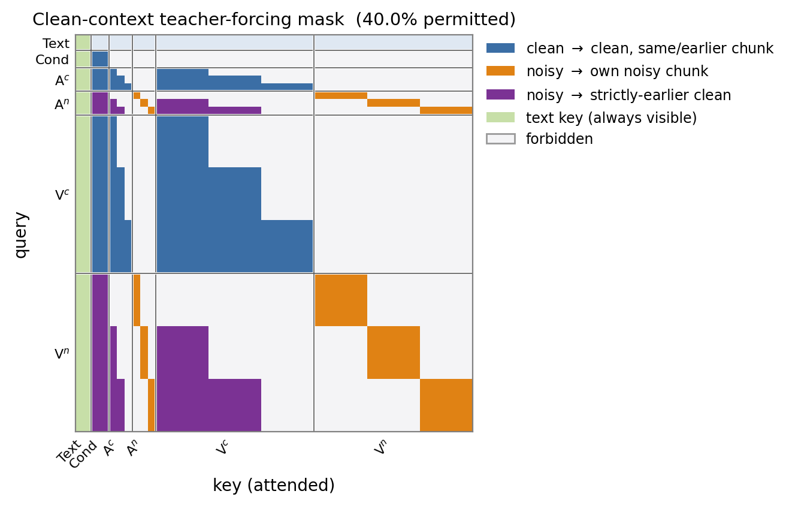
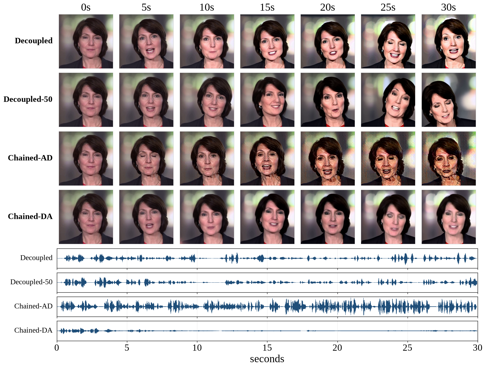
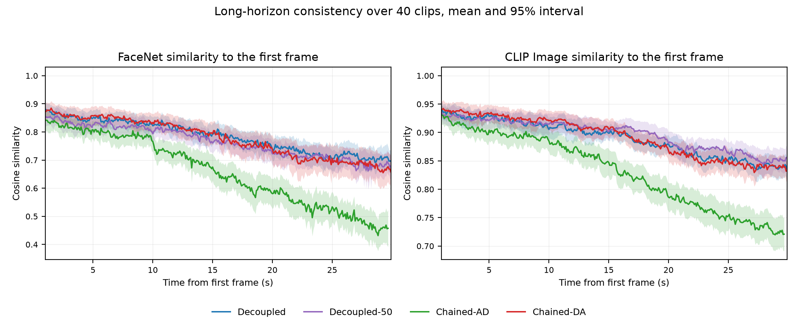
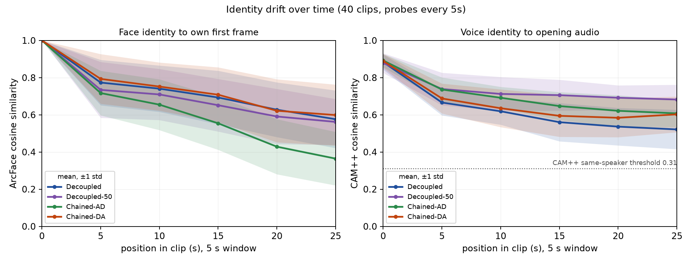

Frozen backbone
MiniMax-H3 in its first-frame-conditioned audio–video configuration. Text, a first-frame condition, video and audio form one packed sequence with three-dimensional rotary positions. The backbone is never updated.
Under review as a conference paper at ICLR 2027
Two capabilities, learned apart, added at inference.
Interactive system
This is a screen recording of our interactive live system, not an offline generated clip. Doubao talks with our character; the laptop page streams joint audio–video in real time from the composed 4-step adapters (block-causal + few-step), with half-duplex turn-taking. Turn the sound on.
Making a joint audio–video diffusion transformer stream in real time needs two edits at once: block-causal attention, so frames leave before the clip is finished, and few-step sampling, so each chunk is cheap. The streaming literature chains them — distil, then causalise, or the reverse. We show the chain is unnecessary. Each capability is trained independently against one frozen backbone and the two updates are simply added at inference. Because they edit different functional axes — context routing versus the denoising trajectory — their weight updates write into near-orthogonal directions, which we predict and then verify. No joint training, no orthogonality constraint, no extra stages.
One frozen backbone, two independent adapters, one addition.

MiniMax-H3 in its first-frame-conditioned audio–video configuration. Text, a first-frame condition, video and audio form one packed sequence with three-dimensional rotary positions. The backbone is never updated.
Trained against the frozen backbone with clean-context teacher forcing on a doubled token axis: each chunk appears twice at identical rotary positions, once clean and once noisy, so a noisy chunk reads only strictly earlier clean ground truth. One plain flow-matching regression — the only objective we ever train.
Not trained by us. We take a public third-party 4-step distillation of the same backbone, learned under bidirectional attention where distillation is already solved. Each capability is acquired where it is cheapest; we never touch an ODE solver, an EMA target, or a critic.
W + Δd + Δc, combined by weight arithmetic at
inference. Δd is fused offline so it adds no runtime overhead;
Δc loads on top. Neither stage ever sees a base the other has altered, and
Δc stays re-composable across step counts.

Every clip is referenced to the 50-step bidirectional teacher's own generation, so reference and generation are comparable frame by frame. Whole-seg is the same few-step adapter run bidirectionally — it isolates what causalisation costs, and removes “four steps is too few” from the account.
The same 4-step composed stack on VABench I2AV: 521 first-frame-conditioned clips across 14 scene types (animals, music, weather, events), almost no talking faces. Six high-scoring examples below. Decoupled is ours (4-step streaming); NAR-4 is the same few-step adapter run on the whole clip. Turn the sound on — the benchmark is about the soundtrack as much as the picture.
Autoregressive and non-autoregressive arms use the same 4-step setting as the paper. Sora2, Veo3 and Wan2.5 are copied from the VABench paper on the same 521 prompts, under each system’s own defaults — not re-run by us. Artistry is from supplementary Table 3; the other rows are from Table 2. Lower DeSync is better.
| Metric | AR-4Decoupled, ours | NAR-4whole-segment | Sora2 | Veo3 | Wan2.5 |
|---|---|---|---|---|---|
| Audio Aes | 3.472 | 3.467 | 2.974 | 3.574 | 3.455 |
| T–V Align | 0.2233 | 0.2254 | 0.2188 | 0.2334 | 0.2374 |
| T–A Align | 0.3277 | 0.3569 | 0.4045 | 0.4130 | 0.2865 |
| A–V Align | 0.2177 | 0.235 | 0.2623 | 0.3215 | 0.2112 |
| DeSync ↓ | 0.6693 | 0.5992 | 0.9171 | 0.6136 | 0.3539 |
| Alignment | 4.919 | 4.921 | 4.885 | 4.906 | 4.812 |
| Expressiveness | 4.488 | 4.522 | 4.390 | 4.631 | 4.495 |
| Visual Realism | 4.9 | 4.923 | 4.964 | 4.921 | 4.766 |
| Audio Realism | 4.43 | 4.441 | 4.597 | 4.660 | 4.395 |
| Audio QA | 0.7075 | 0.7392 | 0.8287 | 0.8584 | 0.8084 |
| Visual QA | 0.7338 | 0.7493 | 0.7611 | 0.7982 | 0.7889 |
| Artistry | 3.985 | 3.981 | 3.931 | 3.983 | 3.929 |
The autoregressive model is worse on text–audio alignment and on DeSync; the other absolute gaps are small. These 521 clips are mostly non-speech, whereas the training set is entirely digital humans. Alignment is above Sora2, Veo3 and Wan2.5; audio aesthetics is above Sora2 and Wan2.5.
A causal adapter trained on 5–10 s clips, streamed to 30 s with the history capped by a sliding window. Scripts are written for 40 s so every system is still mid-sentence when the video ends — falling silent is therefore a failure, not an ending. Turn the sound on: the separation is audible before it is visible.

| System | Sync-C ↑ | Identity ↑ | CLIP ↑ | IQA ↑ | Voice ↑ | RMS |
|---|---|---|---|---|---|---|
| Decoupled | 5.69 (−29.6%) | 0.710 (−18.3%) | 0.844 (−9.7%) | 0.871 (+2.6%) | 0.521 (−41.0%) | 0.086 (−10.6%) |
| Decoupled-50 | 6.23 (−19.1%) | 0.687 (−18.9%) | 0.856 (−8.2%) | 0.848 (+3.0%) | 0.682 (−22.3%) | 0.109 (−16.6%) |
| Chained-AD | 7.82 (−12.8%) | 0.484 (−41.8%) | 0.737 (−19.7%) | 0.526 (−35.4%) | 0.608 (−31.9%) | 0.185 (+49.0%) |
| Chained-DA | 3.75 (−43.7%) | 0.683 (−21.4%) | 0.841 (−10.5%) | 0.656 (−16.2%) | 0.603 (−32.3%) | 0.047 (−37.9%) |
Each cell is the score on the final 5 s and, in parentheses, its change from the opening 5 s. Bold marks the best closing window; for RMS, an absolute level, it marks the smallest relative change. Decoupled closes best on identity and image quality; Chained-AD keeps the best lip sync but loses over a third of identity and image quality; Chained-DA has largely fallen silent.


The sum is safe exactly if the two updates do not interfere. Δd reparametrises the denoising map along the noise axis; Δc edits context routing — how a token aggregates clean history through the cache. Different input factors, so near-orthogonal writes are the default and interference is what would need explaining.
| Measurement | Decoupled | Chained-DA | Chained-AD | null |
|---|---|---|---|---|
| Projection | +0.0006 | −0.0022 | −0.0008 | +0.0000 |
| Write interference | 0.0147 | 0.0169 | 0.0451 | 0.0117 |
| Read interference | 0.1356 | 0.1061 | 0.1844 | 0.0237 |
W, inside
the tangent regime where weight arithmetic is expected to behave.
| Metric | Teacher50 step | Whole-seg4 step | Decoupled4 step, ours | Decoupled-5050 step | Chained-DA4 step | Chained-AD4 step |
|---|---|---|---|---|---|---|
| Sync-C ↑ | 8.412 | 8.403 | 7.443 | 7.197 | 6.389 | 8.021 |
| AV-IB ↑ | 0.414 | 0.414 | 0.403 | 0.423 | 0.363 | 0.419 |
| IQA ↑ | 0.908 | 0.915 | 0.914 | 0.894 | 0.854 | 0.877 |
| ASE ↑ | 5.048 | 5.110 | 5.106 | 5.023 | 5.019 | 5.008 |
| CLIP ↑ | 0.212 | 0.212 | 0.212 | 0.210 | 0.212 | 0.212 |
| CSIM-1st ↑ | 0.886 | 0.870 | 0.864 | 0.853 | 0.871 | 0.835 |
| IQA drift | 1.005 | 1.008 | 1.030 | 1.026 | 1.002 | 0.990 |
| CSIM drift | 0.981 | 0.981 | 0.950 | 0.948 | 0.945 | 0.916 |
| WER (En) ↓ | 0.041 | 0.047 | 0.127 | 0.110 | 0.126 | 0.136 |
| CER (Zh) ↓ | 0.014 | 0.008 | 0.051 | 0.055 | 0.061 | 0.061 |
Bold marks the best of the four autoregressive systems per row; for the drift rows, the closest to 1. Speech is transcribed with Qwen3-ASR-1.7B: WER for the English clips, CER for the Chinese ones.
Whole-seg → Decoupled varies only the attention layout: IQA 0.915 → 0.914, ASE 5.110 → 5.106, CLIP unchanged, FID 66.18 → 66.15 — below the teacher's floor of 67.10.
Speech: intelligibility (WER 0.047 → 0.127), lip–speech coupling (Sync-C 8.403 → 7.443) and the audio distribution. All three need the model to know where it is in the script; chunkwise attention leaves only the audio history to infer it from.
Chained-DA falls behind on appearance, synchronisation and speech, and its FID rises above the teacher's floor (70.31 against 67.10) while Decoupled stays below it (66.15) — the un-distillation the method section predicts.
Chained-AD distils last with sampler-aware objectives and buys back the best lip sync of any 4-step configuration, at the price of appearance and identity (IQA 0.877 against 0.914) and two extra training stages.
100 held-out clips each. The teacher is a system under test here, not the reference.
| System | IQA ↑ | Sync-C ↑ | AV-IB ↑ | DeSync ↓ | CSIM-r ↑ | FID ↓ | FVD ↓ |
|---|---|---|---|---|---|---|---|
| AVSpeech (n = 100) | |||||||
| GT (source) | 0.852 | 6.82 | 0.377 | 0.115 | 0.867 | — | — |
| Teacher | 0.857 | 8.49 | 0.333 | 0.028 | 0.839 | 32.2 | 128.5 |
| Whole-seg | 0.835 | 7.82 | 0.328 | 0.040 | 0.864 | 33.7 | 119.2 |
| Decoupled | 0.866 | 7.54 | 0.334 | 0.007 | 0.791 | 35.2 | 129.0 |
| Decoupled-50 | 0.836 | 7.13 | 0.324 | 0.028 | 0.761 | 38.9 | 143.6 |
| Chained-AD | 0.804 | 8.39 | 0.305 | 0.012 | 0.741 | 38.8 | 150.0 |
| Chained-DA | 0.803 | 6.10 | 0.290 | 0.023 | 0.790 | 40.2 | 131.9 |
| VidChatBench (n = 100) | |||||||
| GT (source) | 0.770 | 5.23 | 0.404 | 0.081 | 0.797 | — | — |
| Teacher | 0.769 | 7.32 | 0.328 | 0.022 | 0.725 | 38.1 | 171.4 |
| Whole-seg | 0.712 | 6.69 | 0.319 | 0.022 | 0.752 | 40.5 | 178.9 |
| Decoupled | 0.866 | 7.84 | 0.353 | 0.024 | 0.774 | 39.6 | 184.0 |
| Decoupled-50 | 0.829 | 7.65 | 0.348 | 0.036 | 0.758 | 41.3 | 191.5 |
| Chained-AD | 0.742 | 7.85 | 0.336 | 0.031 | 0.698 | 42.4 | 203.0 |
| Chained-DA | 0.776 | 6.70 | 0.302 | 0.034 | 0.775 | 43.5 | 193.8 |
| HDTF (n = 100) | |||||||
| GT (source) | 0.877 | 8.24 | 0.330 | — | 0.937 | — | — |
| Teacher | 0.874 | 8.94 | 0.297 | — | 0.919 | 13.0 | 63.6 |
| Whole-seg | 0.877 | 8.65 | 0.263 | — | 0.933 | 11.3 | 48.3 |
| Decoupled | 0.892 | 9.04 | 0.295 | — | 0.905 | 14.4 | 61.4 |
| Decoupled-50 | 0.880 | 8.69 | 0.270 | — | 0.902 | 15.8 | 59.2 |
| Chained-AD | 0.853 | 9.28 | 0.293 | — | 0.869 | 22.3 | 98.9 |
| Chained-DA | 0.876 | 8.58 | 0.253 | — | 0.919 | 14.2 | 49.6 |
The video decoder is a non-causal LightVAE: five visual latents decode to 17 frames, so every latency below is per block, not per frame. Training and inference use ten latents per chunk — one DiT block is about 34 frames, 1.42 s at 24 fps. Text encoder, DiT (W8A8 fused kernels) and VAE decoder sit on separate devices: a finished DiT block is handed to the decoder while DiT starts the next.
First-packet split (20 runs): text encode 0.103 s (uncached, one shot), DiT 0.390 ± 0.001 s, decode 0.305 ± 0.006 s (video 0.244, audio 0.061), pack 0.024 ± 0.001 s; the leftover 0.064 ± 0.004 s is setup before denoise and handing the block to the decoder. KV-cache extraction rides that first block into the decoder, off the first-packet path. These numbers differ from the paper because this stack uses W8A8 quantization, more GPUs, and a lightweight VAE. The interactive demo on this page also sees about 0.5–1 s of network delay.
Training is talking-head; VABench is the non-speech check. Adaptation data are digital humans, and the main-text tables stay on that domain. During discussion we evaluated all 521 VABench I2AV clips (mostly non-speech, all 14 categories) at the same 4-step setting; the autoregressive adapter stays close to the non-autoregressive one, except on text–audio alignment and DeSync. Lip–speech metrics in the main tables remain speech-specific.
Speaker identity drifts over long sessions. The composed route holds face identity as well as any chain, but voice similarity to the clip's opening falls furthest for Decoupled (0.521 in the final 5 s, −41.0%). The few-step adapter learned the audio field under whole-sequence attention; the composed model must keep timbre from cached history alone, and the causal adapter never sees its own rollouts. A self-rollout objective is natural future work.
A single backbone. Every result is on MiniMax-H3, so whether parallel composition transfers to other joint audio–video backbones remains untested. We also do not compare against OmniForcing: it is trained on LTX-2, and a cross-backbone table would confound the generator with the recipe.
Broader-data training is untested. We have not trained on a wider mix than talking-head footage, and we have not measured how the method behaves after such training.
@inproceedings{anonymous2027parallel,
title = {Real-Time Joint Audio--Video Generation by
Parallel Adapter Composition},
author = {Anonymous},
booktitle = {Submitted to the International Conference on
Learning Representations (ICLR)},
year = {2027},
note = {Under review}
}